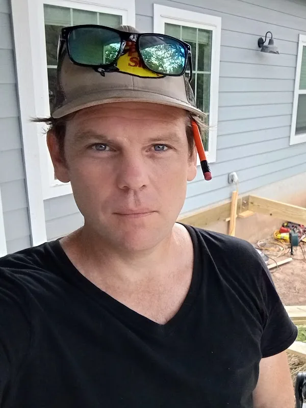
About Ryan Lynch, Founder
I grew up in La Porte, Texas, outside Houston. My dad founded and ran Vi-Tech, the top industrial balancing shop in the Houston area, and I started welding and machining there as a kid. I learned fabrication, machining, balancing, and rotating-equipment repair from him and the master machinists and fabricators around him.
Martial arts got me interested in Japan. I majored in Japanese at Austin College in Sherman, came a credit or two short of a studio art minor, and later finished the coursework for a graduate degree in speech-language pathology at UT Austin before choosing a different path.
The whole time, I kept building: commercial and high-end residential cabinets, high-end remodels, and projects from the ground up. Trades are like languages, and knowing one makes the next one easier to learn. Since 2016 I've worked full time as a general contractor, subcontractor, fabricator, project manager, and design-build contractor through Ogunde Design Build, on both commercial and residential jobs.
Over the years I got to know hundreds of contractors and trade pros in Austin, and for a time I moderated Contractor Connection, the largest contractor Facebook group in Texas. I saw the same problems on every kind of job, from small low-budget work to high-end builds: trust, skill, and communication. Too much money went to middlemen who added cost without adding work, so prices went up while quality and trust went down.
Technology has made most of that unnecessary, but construction hasn't caught up. The old saying is fast, cheap, or good, and you can only pick two. I built AllBuild to deliver all three by cutting margins, tightening schedules, and holding payment in escrow until the work is proven. Contractors keep 100% of their bid, clients pay less, and nobody gets ripped off.
Built by Ryan, Ogunde Design Build, 2014–2025

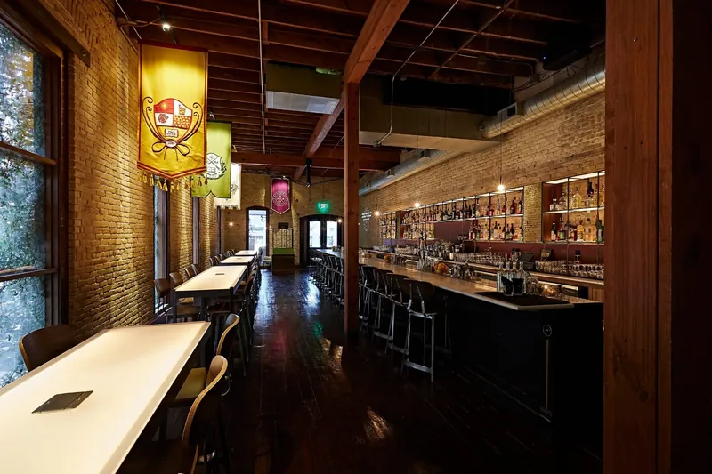

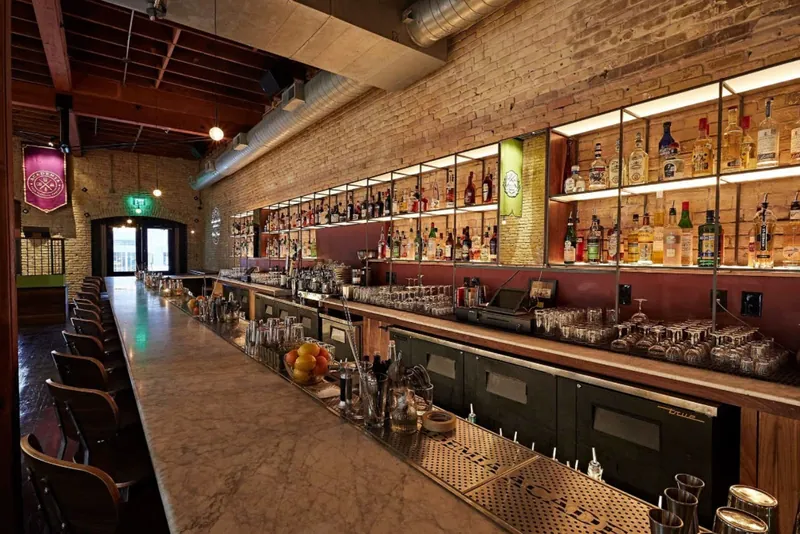

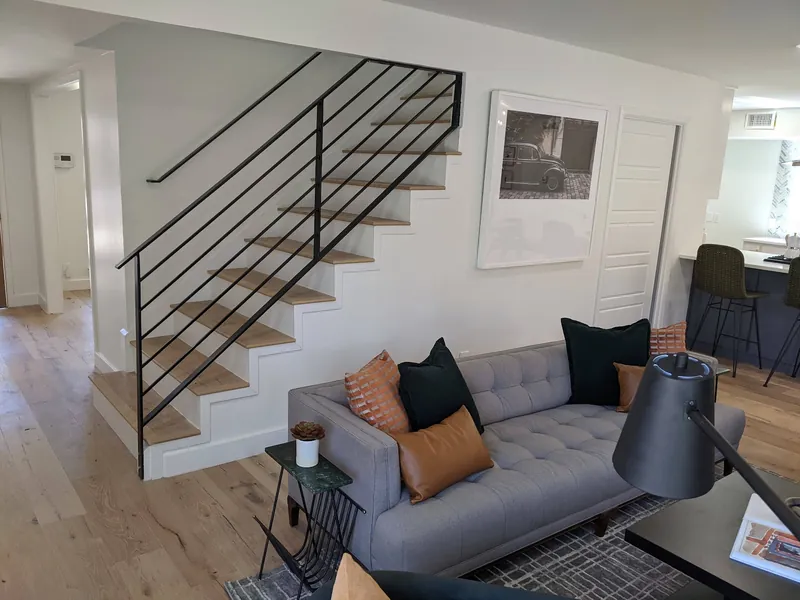

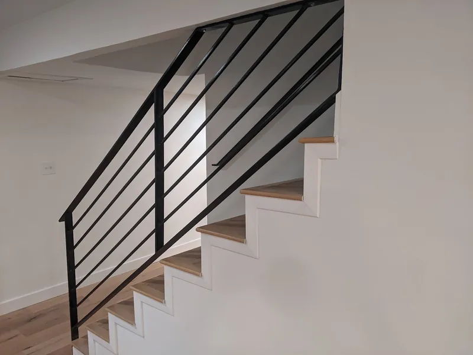

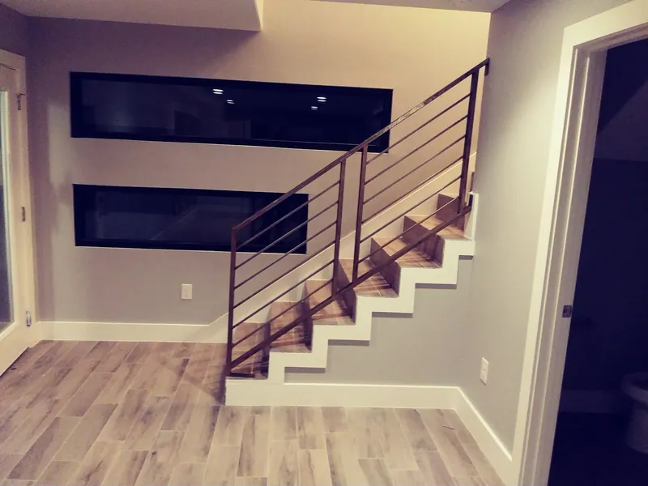

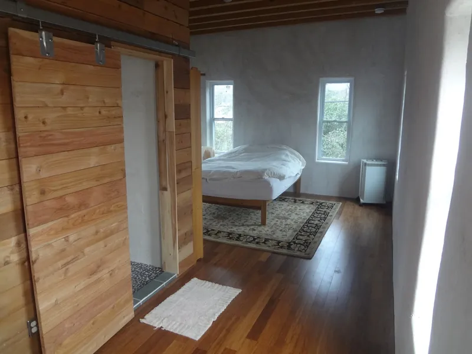

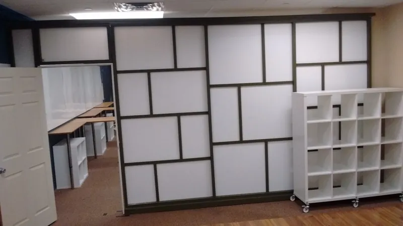

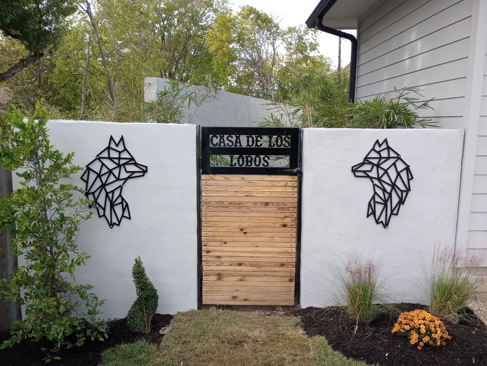

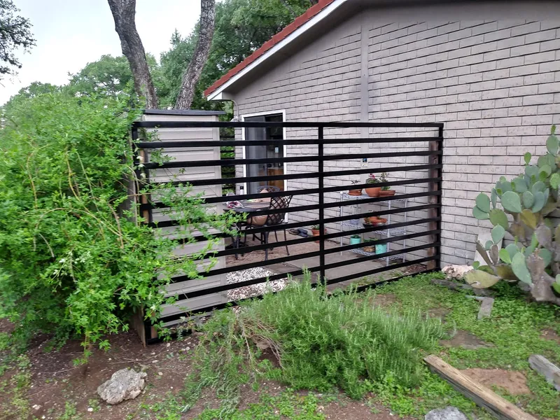

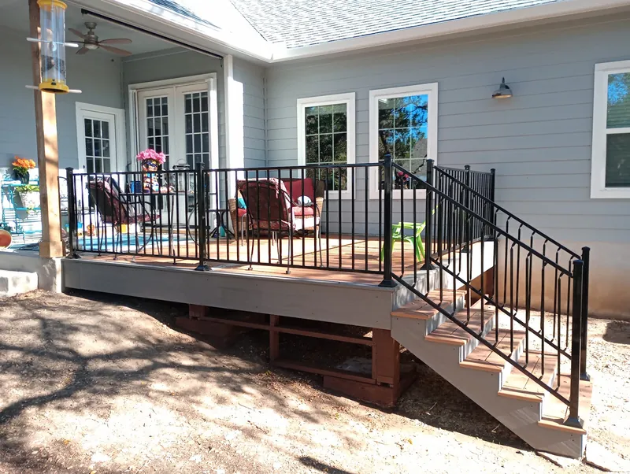

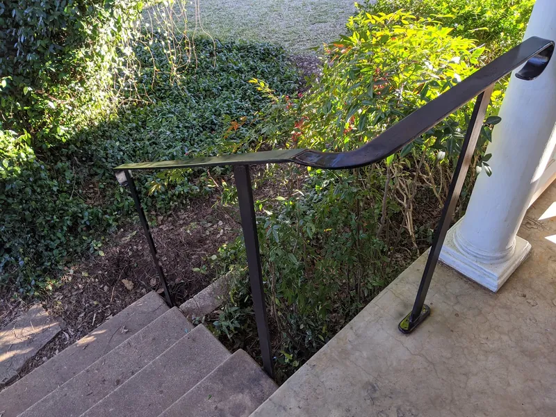

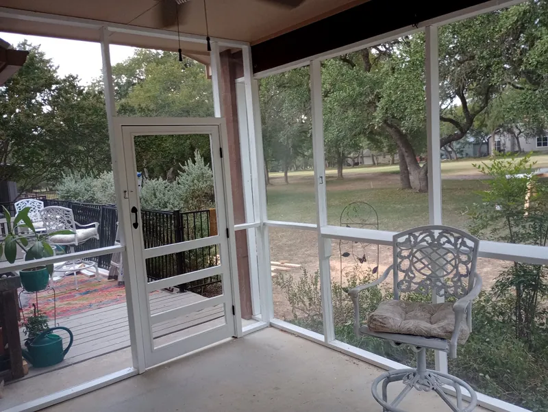